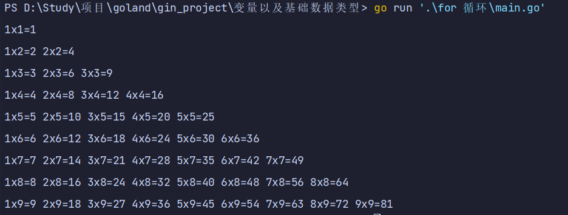
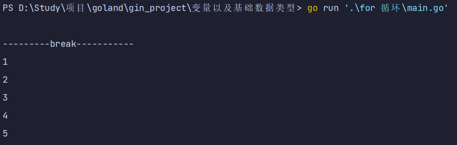
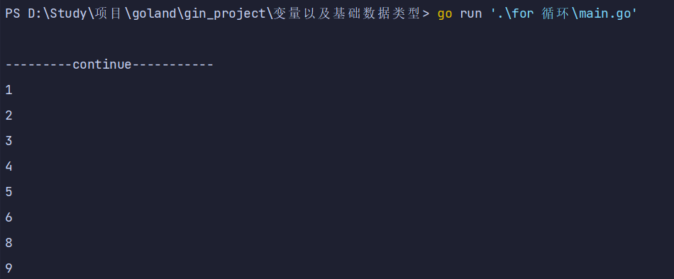

for 循环语法练习
for
for 循环是一个循环控制结构，可以执行指定次数的循环。
语法
Go 语言的 For 循环有 3 种形式，只有其中的一种使用分号。
for init; condition; post {}
for condition {
}
for{
}
- init： 一般为赋值表达式，给控制变量赋初值；
- condition： 关系表达式或逻辑表达式，循环控制条件；
- post： 一般为赋值表达式，给控制变量增量或减量。
for语句执行过程如下：
1、先对表达式 1 赋初值；
2、判别赋值表达式 init 是否满足给定条件，若其值为真，满足循环条件，则执行循环体内语句，然后执行 post，进入第二次循环，再判别 condition；否则判断 condition 的值为假，不满足条件，就终止for循环，执行循环体外语句。
for 循环的 range 格式可以对 slice、map、数组、字符串等进行迭代循环。格式如下：
for key, value := range oldMap {
newMap[key] = value
}
循环嵌套
Go 语言允许用户在循环内使用循环。接下来我们将为大家介绍嵌套循环的使用。
语法
for [condition | ( init; condition; increment ) | Range]
{
for [condition | ( init; condition; increment ) | Range]
{
statement(s);
}
statement(s);
}
九九成法表
package main
import "fmt"
func main() {
for m := 1; m < 10; m++ {
/* fmt.Printf("第%d次：\n",m) */
for n := 1; n <= m; n++ {
fmt.Printf("%dx%d=%d ", n, m, m*n)
}
fmt.Println("")
}
}

break
Go 语言中 break 语句用于以下两方面：
- 用于循环语句中跳出循环，并开始执行循环之后的语句。
- break 在 switch（开关语句）中在执行一条 case 后跳出语句的作用。
- 在多重循环中，可以用标号 label 标出想 break 的循环。
语法
break 语法格式如下：
break;
demo
// break 跳出当前循环，可⽤于 for、switch、select。
func breakTest() {
fmt.Println("")
fmt.Println("---------break-----------")
for i := 1; 1 < 10; i++ {
if i == 6 {
break
}
fmt.Println(i)
}
}

continue
Go 语言的 continue 语句 有点像 break 语句。但是 continue 不是跳出循环，而是跳过当前循环执行下一次循环语句。
for 循环中，执行 continue 语句会触发 for 增量语句的执行。
在多重循环中，可以用标号 label 标出想 continue 的循环。
语法
continue 语法格式如下：
continue;
demo
// continue 跳过本次循环，只能用于 for。
func continueTest() {
fmt.Println("")
fmt.Println("---------continue-----------")
for i := 1; i < 10; i++ {
if i == 7 {
continue
}
fmt.Println(i)
}
}
goto
Go 语言的 goto 语句可以无条件地转移到过程中指定的行。
goto 语句通常与条件语句配合使用。可用来实现条件转移， 构成循环，跳出循环体等功能。
但是，在结构化程序设计中一般不主张使用 goto 语句， 以免造成程序流程的混乱，使理解和调试程序都产生困难。
语法
goto 语法格式如下：
goto label;
..
.
label: statement;